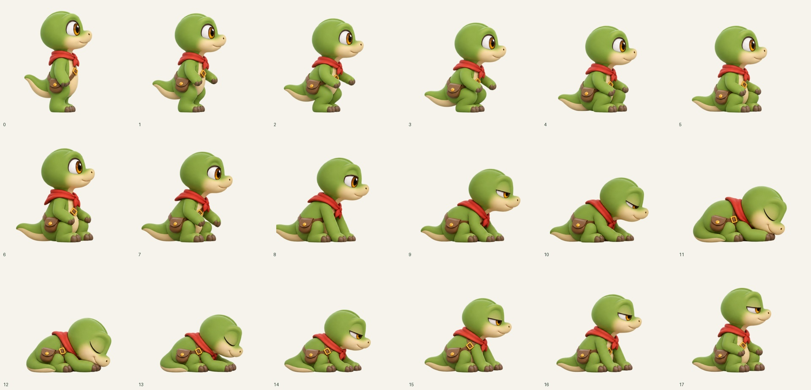
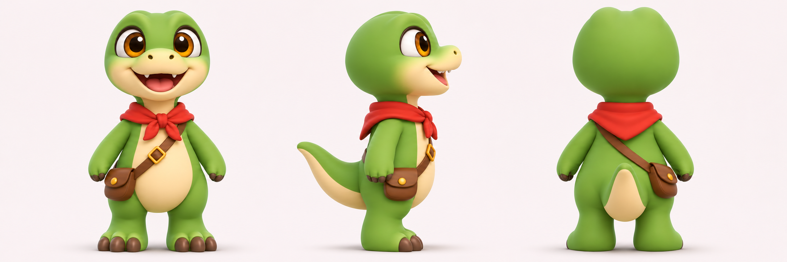

Studio history · Previous motion study · Approved baselineV0.7.3 · AUTHORED POSE STUDY · NOT APPROVED
A quieter rest, one complete pose at a time.
New grounded seated poses, gradual sleepy recovery and crisp facial features. This is a staging study: movement is stepped, and pose consistency still needs work.
Loading…
Compare with v0.7.2
The previous interpolated study blends eyes, mouth and clothing. This version displays complete authored poses, retaining a visible step between drawings.
Open previous controls
New pose contact sheet

Approved visual reference

Rendered study video · Transparent sprite atlas · Manifest
Still limited by drawing-to-drawing head, accessory and contact differences. Standing recovery reverses the sit sequence. Breathing gently scales the complete sleeping pose about its ground contact; it is approximate. No dialogue or film work. Owner acceptance remains required.